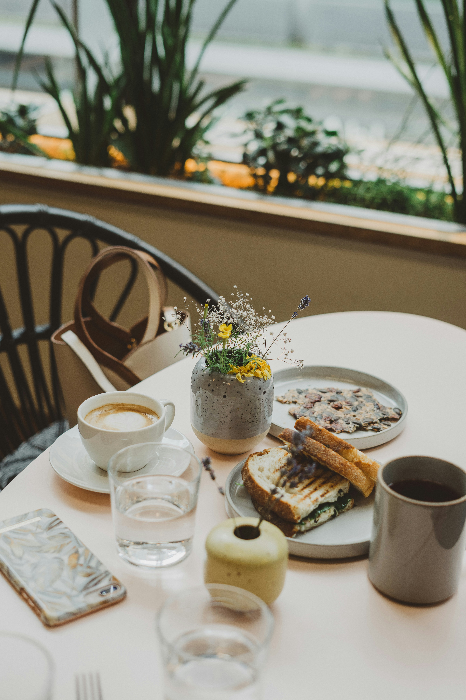
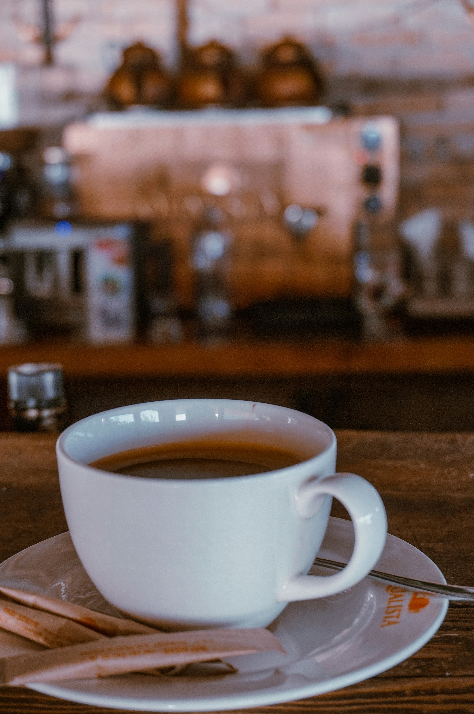

Üdvözlünk a Malacka Kávézóban
Frissen pörkölt kávé, barátságos hangulat a belváros szívében
Miért a Malacka?
☕ Frissen pörkölt kávék
🍰 Házi sütemények
📶 Ingyenes WiFi
🐷 Barátságos hangulat
Rólunk
A Malacka Kávézó egy barátságos, belvárosi találkozóhely, ahol a minőségi kávé és a nyugodt hangulat találkozik. Frissen pörkölt kávéval, házi süteményekkel és mosollyal várunk minden nap.
Heti kedvencünk
Cappuccino + házi sajttorta – tökéletes választás egy nyugodt délutánhoz.
Hangulatképek



További képek